Plays your records. Leaves the signal alone.
A music player for your Navidrome server, on Windows, macOS, and Linux.
Download for Windows Download for macOS Download for Linux Get the Android beta
Version 0.3.0, open source. No server? Try Navidrome's demo, user demo, password demo.
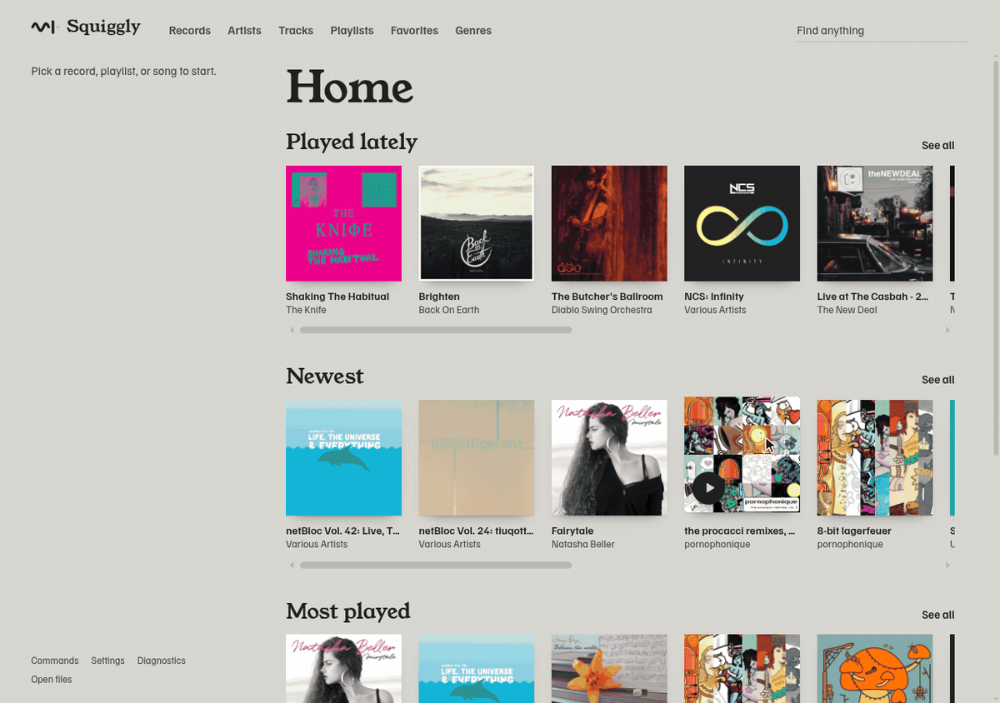
Home starts where you left off.
What you played lately, the newest records, and mixes built from your library: by genre, by what you play, and by decade. The queue from your last session waits on the deck, once, with Resume.
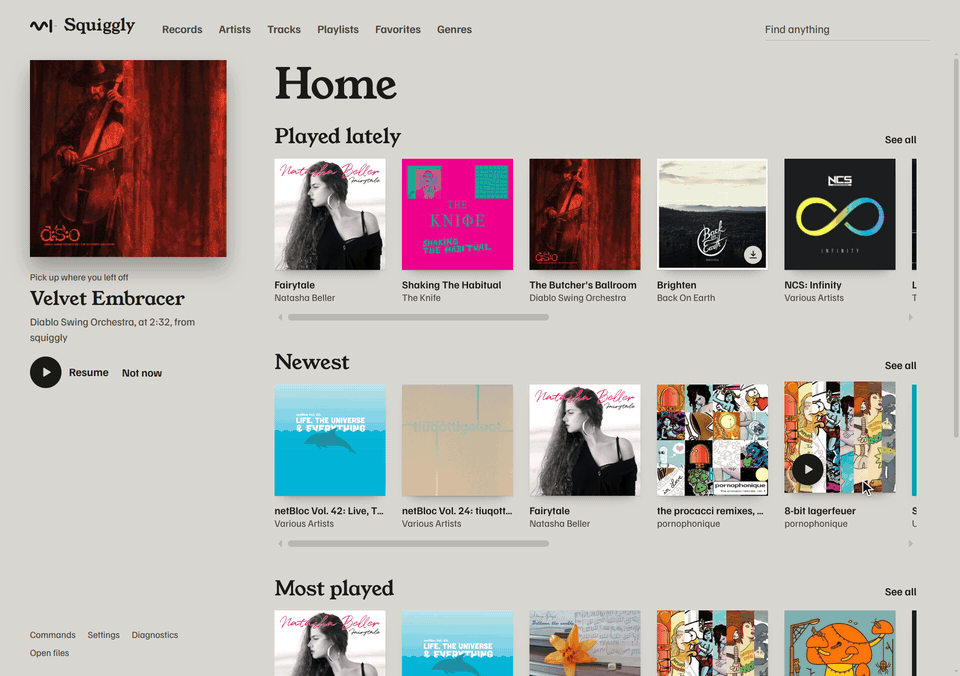
The sound, untouched.
No EQ, crossfade, or loudness levelling. The deck takes its colours from the sleeve and names the format and sample rate. Turn the volume down and it says so.
When there's room, the synced lyrics run under the deck. The next song's sleeve is fetched before it plays.
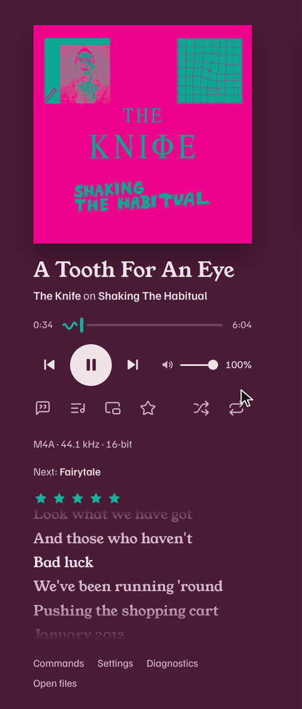
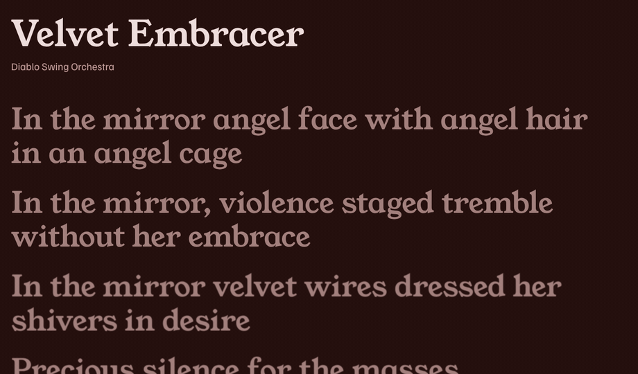
Lyrics, word by word.
Synced lyrics from your server, or from LRCLIB if you turn it on. Lyrics looked up are kept on disk, and the next song's are looked up ahead.
Every name opens a page.
Artists' and records' names in song lists and on cards are links. An artist's page has their picture and their records. An artist with no records of their own lists, and plays, the songs that credit them.
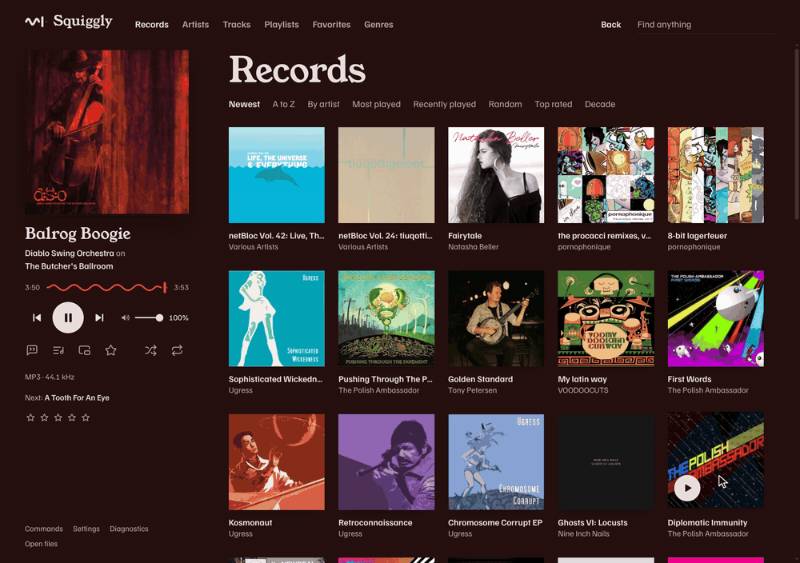
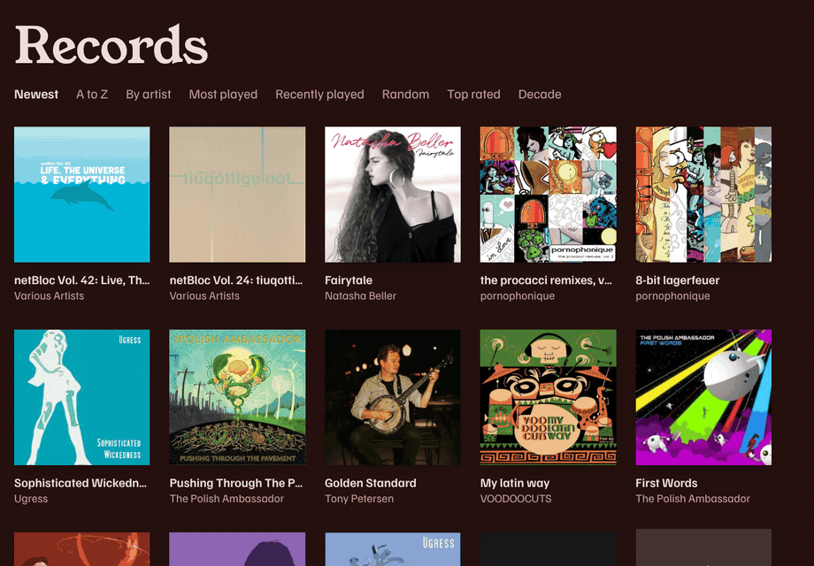
Search, by type.
One field finds artists, records, and songs. A tab narrows it to one of them.
The queue follows you.
Drag songs into place, or move one with Alt+Up and Alt+Down. The queue is saved on your server, so it's waiting on every device.
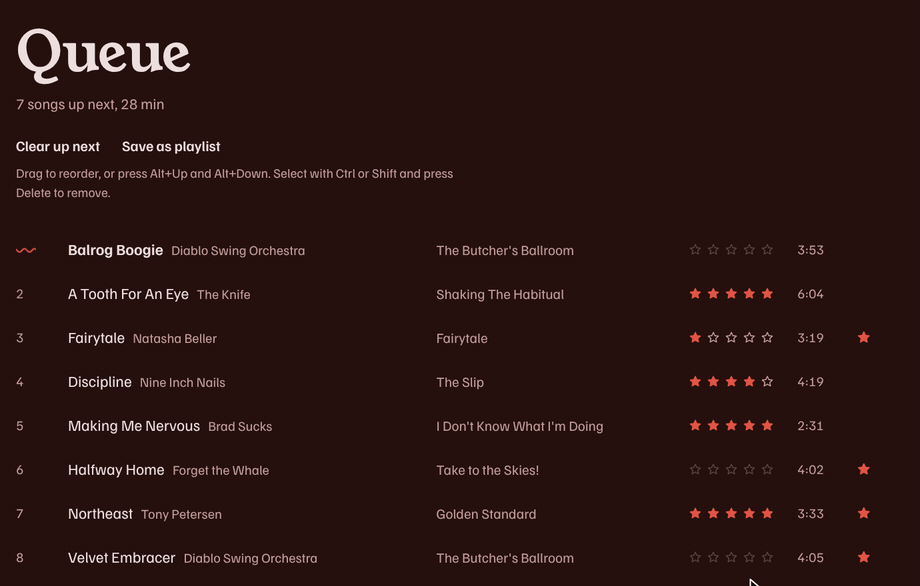
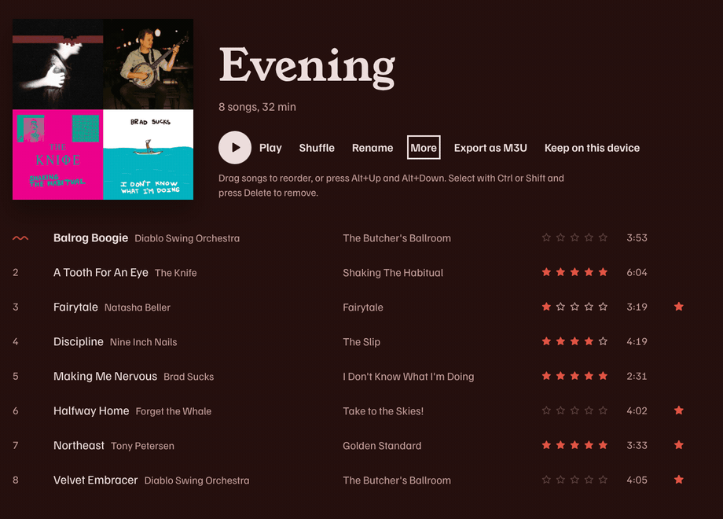
Playlists, in your order.
Drag songs, records, and artists onto a playlist, and drag its songs into place. Export one as M3U, or share it with a link from your server that expires when you choose.
Keep songs on this computer.
Keep a record or a playlist, and its songs play from their files whether the server answers or not.
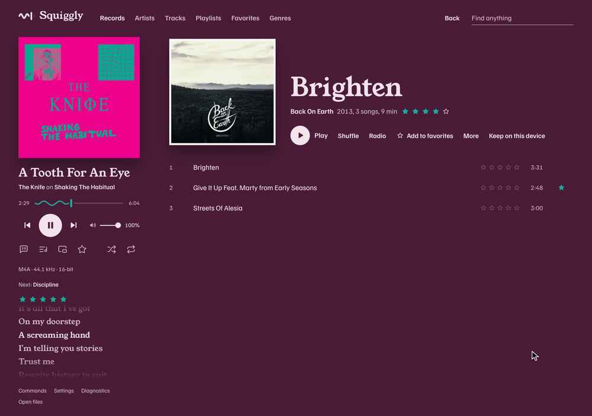
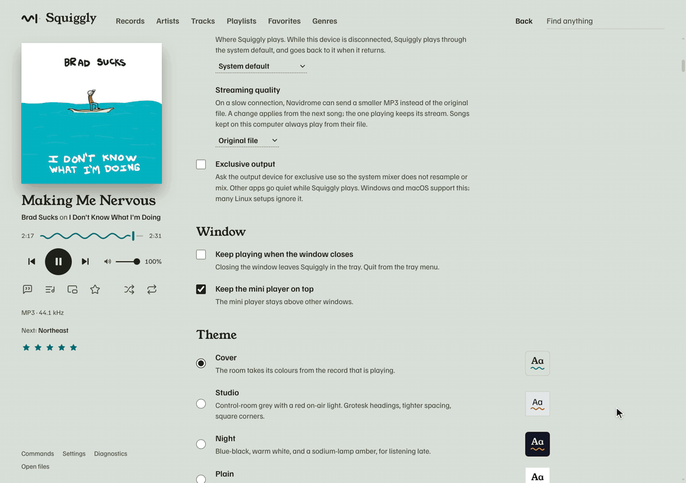
Seeking doesn't wait.
Each song downloads whole as it plays, and the next three after it, so a seek plays at once. On a slow connection, Settings can ask Navidrome for a smaller MP3.
Every action, one keystroke away.
Ctrl+K finds any command. Themes are commands too: Cover takes the sleeve's colours, Night is for late, Studio is grey with a red light. Keys and themes are files you can edit.
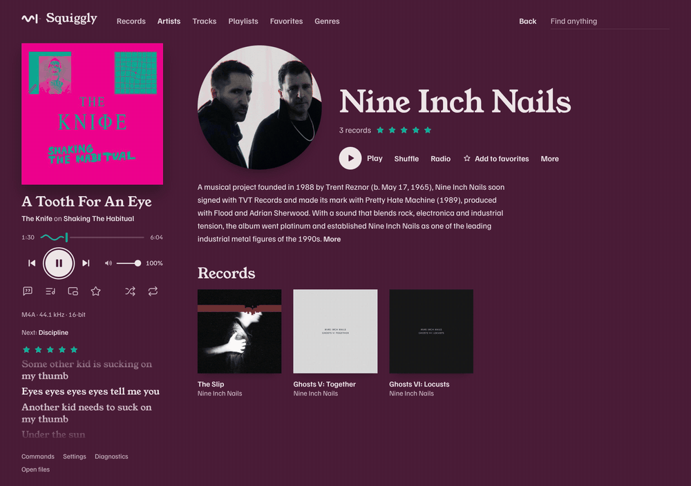
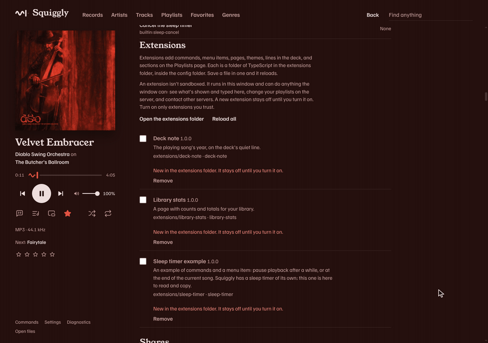
Add what's missing.
An extension is a folder of TypeScript. It can add commands, pages, themes, and lines on the deck, and it reloads when you save. New ones stay off until you turn them on. How to write one.
On your phone too.
The browser version works on any phone. The Android app, which plays with the screen off, is in beta: get it from the 0.3.0-beta.4 pre-release.
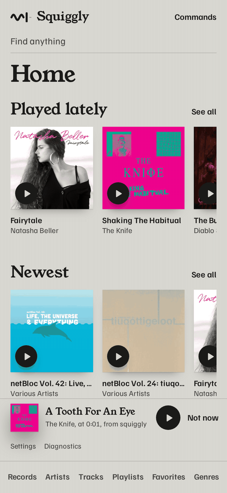
Download
Download for Windows Download for macOS Download for Linux Get the Android beta
Windows 10/11, macOS 13 or later, and Linux. The Android beta needs Android 7 or later.
- Windows portable
- x64, nothing to install
- macOS, Apple silicon
- zip, arm64, needs Homebrew's mpv, untested
- macOS, Intel
- zip, x64, needs Homebrew's mpv, untested
- Fedora RPM
- x86_64, pulls in mpv-libs
- Debian and Ubuntu deb
- amd64, pulls in libmpv2
- Linux AppImage
- x86_64, needs libmpv installed
- Android APK, beta
- 0.3.0-beta.4, Android 7 or later
- SHA256SUMS
sha256sum --ignore-missing -c SHA256SUMS
- The builds aren't signed yet, so Windows warns you: choose More info, then Run anyway.
- The installed Windows app updates itself.
- The Mac builds aren't signed either. macOS 15 and later asks you to choose Open Anyway in System Settings, Privacy & Security; earlier versions, Control-click the app and choose Open. They need Homebrew's mpv (
brew install mpv). They are built on Linux and haven't been tried on a Mac yet. They tell you about updates but don't install them. - The AppImage doesn't include libmpv, so install your distribution's first: libmpv2 on Debian and Ubuntu, mpv-libs on Fedora, mpv on Arch. The release notes say how to run it.
- Android isn't part of 0.3.0. Its APK stays on the 0.3.0-beta.4 pre-release for now.